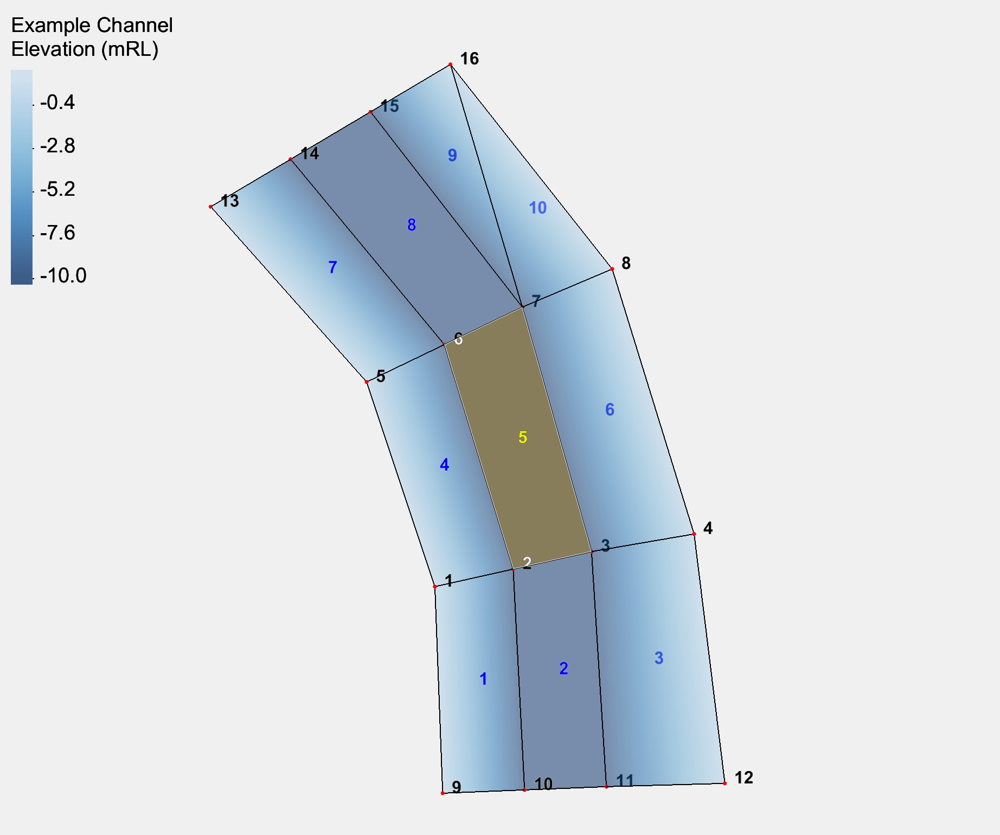
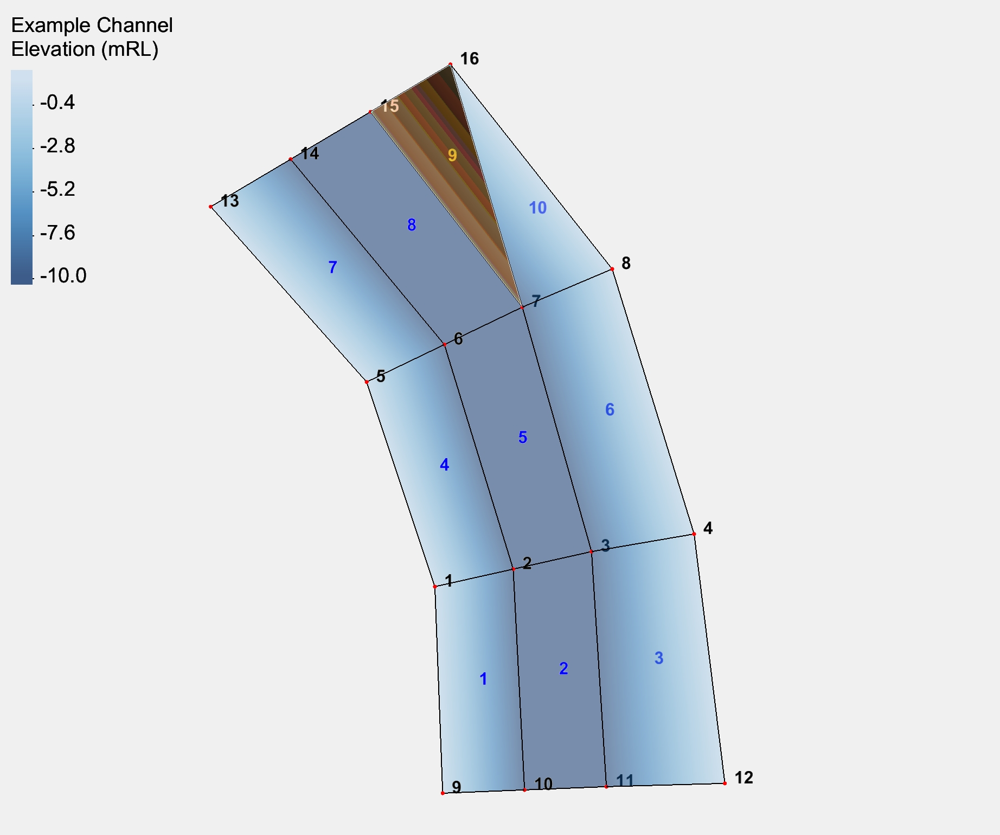
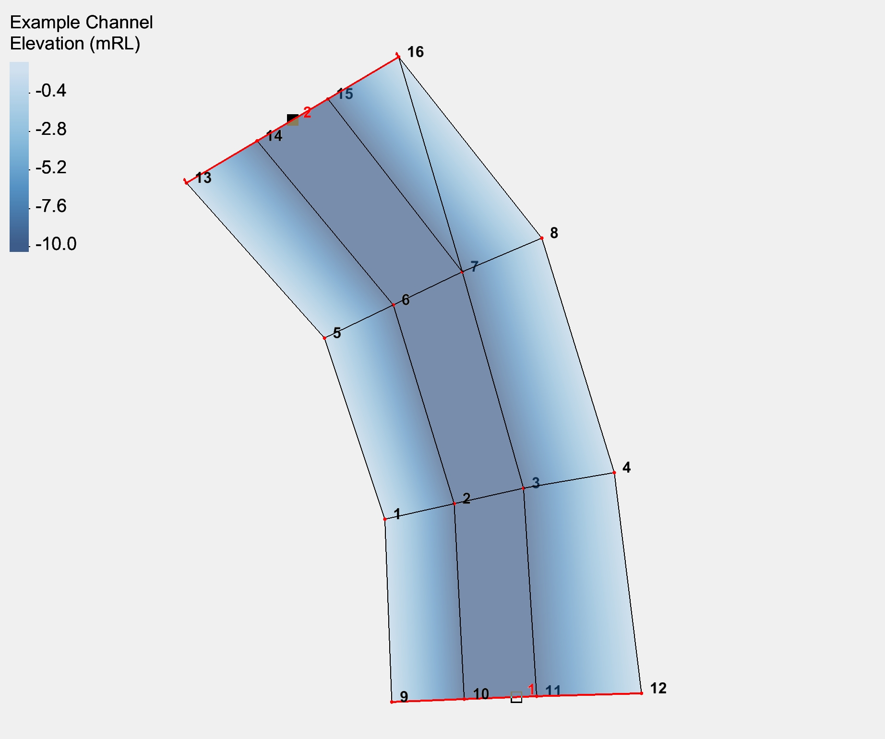
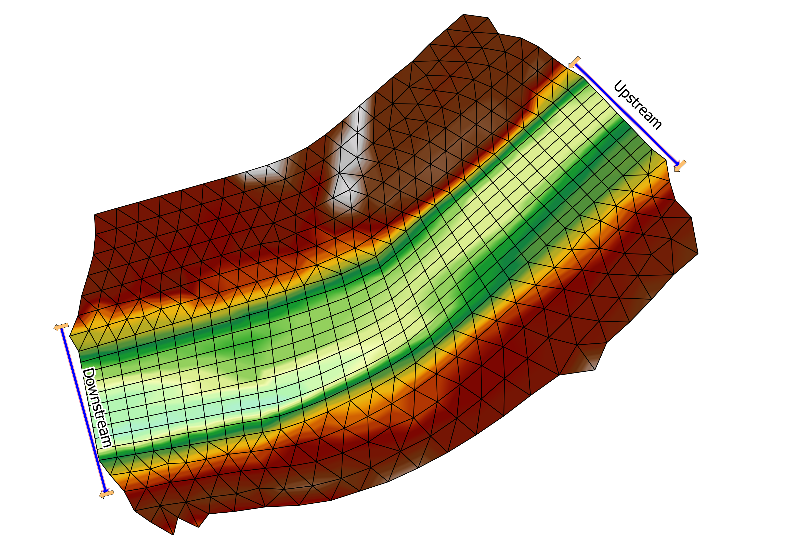
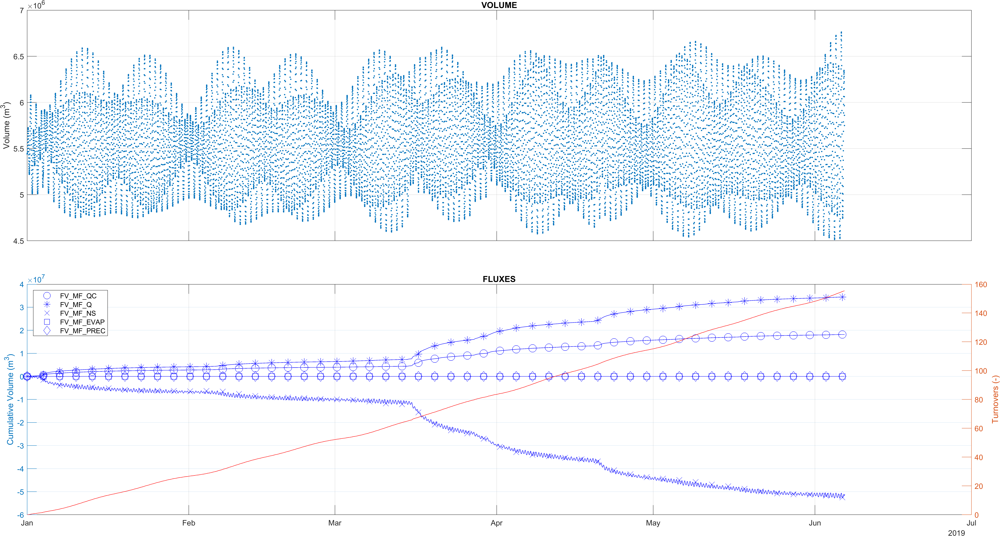

Appendix E 6. Confirm Default Behaviour
Make sure the documentation states clearly:
E.0.1 General Usage Guidance
- Wu: Recommended for general coastal, estuarine and riverine modelling applications.
- Constant: May be used for simplified studies, calibration comparison with legacy configurations, or where a fixed transfer coefficient is required.
- Wind stress influence increases with wind speed magnitude and decreases with increasing water depth.
- Calibration and sensitivity testing of drag parameters is recommended where wind forcing significantly influences model results
E.1 Computational Mesh
E.1.1 Science
MJS TODO
Describe the unstructured mesh format.
Describe the structured mesh
State the importance of the effective length scale
E.1.1.1 Unstructured Mesh File Format
The .2dm file format is used to define unstructured TUFLOW FV meshes. It is an ASCII format that was developed by Aquaveo for the Surface water Modeling System (SMS). This section provides a summary of the main .2dm components used by TUFLOW FV. A full description of the .2dm mesh file format is available via the Aquaveo XMS Wiki.
The following text block is the full contents of a small example unstructured mesh .2dm file. A visual view of the mesh is shown in Figure E.1. The mesh contains:
- 10 elements (8 quadrilateral and two triangular)
- 16 nodes
- 2 nodestrings
MESH2D
MESHNAME "Example Channel"
E4Q 1 2 1 9 10 1
E4Q 2 3 2 10 11 1
E4Q 3 4 3 11 12 1
E4Q 4 6 5 1 2 1
E4Q 5 7 6 2 3 1
E4Q 6 8 7 3 4 1
E4Q 7 14 13 5 6 1
E4Q 8 15 14 6 7 1
E3T 9 16 15 7 1
E3T 10 16 7 8 1
ND 1 2.48000000e+001 4.02800000e+001 0.00000000e+000
ND 2 3.30421270e+001 4.21236640e+001 -1.00000000e+001
ND 3 4.12871134e+001 4.39683219e+001 -1.00000000e+001
ND 4 5.20800000e+001 4.58200000e+001 0.00000000e+000
ND 5 1.76200000e+001 6.18200000e+001 0.00000000e+000
ND 6 2.57990034e+001 6.57578467e+001 -1.00000000e+001
ND 7 3.39997467e+001 6.96992724e+001 -1.00000000e+001
ND 8 4.34600000e+001 7.37100000e+001 0.00000000e+000
ND 9 2.56200000e+001 1.85400000e+001 0.00000000e+000
ND 10 3.42333333e+001 1.88833333e+001 -1.00000000e+001
ND 11 4.28466667e+001 1.92266667e+001 -1.00000000e+001
ND 12 5.53200000e+001 1.95700000e+001 0.00000000e+000
ND 13 1.21000000e+000 8.02700000e+001 0.00000000e+000
ND 14 9.62000000e+000 8.52633333e+001 -1.00000000e+001
ND 15 1.80300000e+001 9.02566667e+001 -1.00000000e+001
ND 16 2.64400000e+001 9.52500000e+001 0.00000000e+000
NS 9 10 11 -12 1
NS 16 15 14 -13 2Figure E.1: Example .2dm Unstructured Mesh - Element numbers (blue text), node locations (red dots), node numbers (black text), nodestrings (red lines) and nodestring names (red text)
The following paragraphs describe how nodes, elements and nodestrings are represented in the .2dm file.
Nodes: Lines that commence with a “ND†are nodes, (also refered to as points or vertices) that define the edges of the elements. Each ND line describes the node ID and its x, y and z (i.e. bed level) coordinate. in Figure E.2 node 7 has been selected, corresponding to the following line of the .2dm file.
ND 7 3.39997467e+001 6.96992724e+001 -1.00000000e+001Figure E.2: Example Node Definition
Elements: Lines that commence with an “E4Q†are quadrilateral (4 sided) elements. Each E4Q line describes the element ID, the four nodes that define its connectivity and spatial extent (in a counter-clockwise direction) and the material type (Figure E.3).
For example, the below line is element 5, defined by connecting nodes 7-6-2-3. The final number on the line specifies a material ID of 1.
E4Q 5 7 6 2 3 1
Figure E.3: Example Quadrilateral Element Definition
Similar to E4Q, the “E3T†lines are triangular elements. Each E3T line describes the element ID, the three nodes that define its connectivity and spatial extent (in a counter-clockwise direction) and the material type (Figure E.4).
For example, the below line is element 9, defined by connecting nodes 16-15-7. The final number on the line specifies a material ID of 1.
E3T 9 16 15 7 1
Figure E.4: Example Triangular Element Definition
Nodestrings: Lines that commence with a “NS†are nodestrings, which can used to define boundary condition, structure or plot output locations. Each NS line defines the series of nodes that form the string, the last node number is assigned as negative. The number following the negative number is the nodestring ID (Figure E.5).
For example, the below line is nodestring 2, defined by connecting nodes 16-15-14-13. The nodestring has the ID 2.
NS 16 15 14 -13 2 
Figure E.5: Example Nodestring Definition
E.1.2 General Usage Guidance
Links to wikis, tutes etc.
While it’s possible to assign bathy, materials and nodestrings via the .2dm, it is recommended that TUFLOW FV mesh independent GIS commands are used.
Restate the importance of the grid on runtimes, refer people to ‘a model runs slow’ and computational timestep section…
E.2 Bathymetry
E.2.1 Science
E.2.1.1 Interpolation Methods
MJS TODO. As bcs etc. also use this it probs needs to be moved somewhere else….
.2dm no interpolation, does a simple cell average of vertices.
For DEMs bilinear interpolation is used.
For TINs bilinear tris and quads
bilinear_interp_weights_quad bilinear_interp_weights_tri
E.2.2 General Usage Guidance
E.2.2.1 Cell Elevation Files
Suggested workflow for cell elevation file generation…
- Run model in test mode
- Open geo csv file
- import into gis
- sample elevation values in gis
- save csv with columns and headers ID, X, Y, Z This file is ready to be read using the cell elevatoin file command.
Need to explicitly state that ID needs to be used to get the model startup benefits.
E.4 Initial Conditions
E.4.1 Science
- Constant
- Spatially variable
- Restart file science - refer to MATLAB tools to ‘hack’ the restart file. Probs need some Python versions of these too…
E.4.1.1 Command Layering
Initial condition layering
- As with other commands, the .fvc file is read sequentially, from the top of the file to the bottom.
- Initial conditions from restart files are applied first, regardless of where they occur in .fvc file. If multiple Restart File commands exist, the last command read takes precedence.
- Non-restart file initial condition commands are processed sequentially from the .fvc. Each override earlier initial condition commands, or restart file initial conditions as follows.
- Spatially constant initial conditions (e.g.
Initial Water Level ) will overwrite all preceding initial condition or restart commands globally. - Spatially variable initial conditions (e.g.
Initial Condition 2D ) will overwrite only the cells that are specified in the initial condition .csv file.
- Spatially constant initial conditions (e.g.
Restart files
For models using restart file initial conditions, it is typically recommended to remove or comment out non-restart initial condition commands to avoid components of the restart file being overridden.
E.5 Boundary Conditions
E.5.1 Science
E.5.1.1 Time Format
MJS Note, this content is referenced from Section D.5.
MJS TODO: Describe the time options specifically how they relate to boundary conditons.
CSV Directly specify ISODATE or time in HOURS
MJS TODO: Need to test what happens if you try to use DAYS, MINUTES, or SECONDS with csv timeseries inputs…
NetCDF
Time Units - Days, Hours/ISODate MJS TODO: Confirm how ISODATE time strings can be read… at the moment assumes it’s all in hours?
Time Shifting with BC Reference Time
Temporal adjustments are best made using the
- Sensitivity testing: advancing or delaying a tidal boundary to examine timing effects.
- Timezone adjustments: shifting data provided in UTC to match local time.
This approach provides flexibility while keeping the core simulation reference consistent.
E.5.1.5 Inflow/Outflow
MJS TODO THIS IS REFERRED TO FROM SECTION HD2D-BC-IO-3 SO NEEDS TO BE ADDED
Q sub-types with diagrams…
QC polygon volume weighting
QC_GRID weighting
E.5.1.7 Atmospheric
Wind and pressure source terms need to be described here Wind speed model How MSLP and the reference pressure is used
MJS TODO Holland model science
E.5.2 General Usage Guidance
E.5.2.1 Boundary Condition Specification - Worked Example
The following worked example demonstrates the general process and syntax to define a boundary condition within an .fvc file.
! BOUNDARY CONDITIONS
! Location of boundaries
Read GIS Nodestring == ..\model\gis\2d_ns_OpenBoundaries_001_L.shp ! Open boundary nodestrings
! Boundary definition
BC == Q, Upstream, ..\bc_dbase\Upstream_Q_001.csv ! boundary_type, location_ID, data_filepath
BC Header == time, sandy_creek ! {TIME}, {Q} (m³/s or ft³/s)
End BC
BC == WL, Downstream, ..\bc_dbase\Downstream_WL_001.csv ! boundary_type, location_ID, data_filepath
BC Header == time, ocean_tide ! {TIME}, {WL} (mRL or ftRL)
End BC
Boundary Location
This example uses a polyline (nodestring) boundary. For polyline boundaries, the spatial location is defined globally (outside of the BC
blocks) using the command 2d_ns_OpenBoundaries_001_L.shp contains one or more digitised polyline features, each assigned a unique identifier. In this
example there are two polylines with the ID “Upstream” and “Downstream” respectively, as shown in Figure E.6. These identifiers correspond to the boundary names referenced within the
individual boundary condition blocks. The command is placed globally so that multiple BC blocks can reference objects from the same GIS file.

Figure E.6: Example Nodestring Location Definition
Boundary Condition Blocks
In the example two boundary condition blocks are specified, initiated by the
The first boundary condition block is:
MEB: IS this just a repeat of the above?
BC == Q, Upstream, ..\bc_dbase\Upstream_Q_001.csv ! boundary_type, location_ID, data_filepath
BC Header == time, sandy_creek ! {TIME}, {Q} (m³/s or ft³/s)
End BC
This block defines a flow (Q) boundary_type applied at location_ID
“Upstream”, which provides the link between the boundary block and the
GIS layer 2d_ns_OpenBoundaries_001_L.shp. The boundary data is read
from a CSV file located at the data_filepath
..\bc_dbase\Upstream_Q_001.csv. The ..\bc_dbase\Upstream_Q_001.csv. In this case,
the column labelled “time” contains the simulation timestamps, and the
column labelled “sandy_creek” contains the flow values (in cubic metres
per second, m³/s).
The subset of the content from ..\bc_dbase\Upstream_Q_001.csv is
provided below. It contains the referenced data headers and flow
timeseries. The data in the ‘one_mile_creek’ column is unused by this BC
block and is ignored.
time, sandy_creek, one_mile_creek
0.0, 0.0, 0.0
0.5, 10.0, 4.0
1.0, 35.0, 12.0
2.0, 0.0, 0.0Similarly, the second boundary condition block is:
BC == WL, Downstream, ..\bc_dbase\Downstream_WL_001.csv ! boundary_type, location_ID, data_filepath
BC Header == time, ocean_tide ! {TIME}, {WL} (mRL or ftRL)
End BC
Here, a water level (WL) boundary_type is applied at the location_ID
“Downstream”, using data from the CSV file
..\bc_dbase\Downstream_WL_001.csv. The BC Header command specifies the
columns from which the time and water level (in metres relative level,
mRL) data are read (“time” and “ocean_tide”, respectively).
The subset of the content from ..\bc_dbase\Upstream_Q_001.csv is shown
below which contains the referenced headers and required water level
timeseries.
time, ocean_tide
0.0, -0.5
0.25, -0.32
0.5, -0.02
0.75, 0.28E.6 Hydraulic Structures
E.6.1 Science
E.6.1.1 Structure Connection Types
The structure connection type (single nodestring, linked nodestrings, or linked zones) defines how fluxes of mass and momentum are exchanged between the 2D model domain and the hydraulic structure. Structure interaction with the 2D domain occurs in five steps:
Hydraulic properties are updated in the cells and/or faces defined by the structure connection type.
- For nodestrings (single or linked), hydraulic paramaters at each cell face in the nodestring are updated, and nodestring average values are calculated using Equation (E.1).
- Where:
-
\(X_{\text{avg}}\) = nodestring weighted average of the hydraulic parameter
\(X_i\) = value of the hydraulic parameter at face \(i\)
\(L_i\) = face length
\(h_i\) = water depth at face \(i\)
\(N_f\) = number of faces
- For linked zone connections, hydraulic properties at each cell are updated, and average values are calculated using Equation (E.2).
- Where:
-
\(X_{\text{avg}}\) = zone weighted average of the hydraulic parameter
\(X_i\) = value of the hydraulic parameter in cell \(i\)
\(A_i\) = plan area of cell \(i\)
\(h_i\) = water depth in cell \(i\)
\(N_c\) = number of cells
The governing equations for the hydraulic structure are applied. These are specific to the structure type and are detailed in Sections E.6.1.2 to E.6.1.9.
Mass and momentum derived from the structure equations are distributed to cells and/or faces defined by the connection type.
- For nodestrings, distribution is based on Equation (E.3).
- Where:
-
\(X_i\) = value of the hydraulic parameter at face \(i\)
\(L_i\) = face length
\(h_i\) = water depth at face \(i\)
\(N_f\) = number of faces
- For linked zones, distribution is based on Equation (E.4).
- Where:
-
\(X_i\) = value of the hydraulic parameter in cell \(i\)
\(A_i\) = plan area of cell \(i\)
\(h_i\) = water depth in cell \(i\)
\(N_c\) = number of cells
Flux limits are applied to ensure that calculated structure fluxes remain within physically consistent ranges (see Section MJS TODO).
The final structure fluxes are added to the 2D model:
- For nodestring connections, fluxes are added to existing face fluxes.
- For zone connections, fluxes are added as cell source terms.
- For nodestring connections, fluxes are added to existing face fluxes.
E.6.1.2 Weirs
Weir flow is calculated using the general weir equation with allowance for weir submergence (Equation (E.5)). Key terms are displayed in Figure E.7.
\[\begin{equation} Q = C_d B H_u^{3/2} \times \max(C_{sf}, C_{sf\_min}) \tag{E.5} \end{equation}\]where:
\(Q\) = discharge or flow rate (m³/s)
\(C_d\) = weir coefficient (–)
\(B\) = weir width (m)
\(H_u\) = Upstream depth of water approaching the weir relative to the weir crest (m or ft)
\(C_{sf}\) = weir submergence factor (–)
\(C_{sf\_min}\) = minimum weir submergence factor (–)
By default, the weir width \(B\) is set either via:
- The nodestring length for nodestring structure connection types
- The average of the upstream and downstream nodestring lengths for linked nodestrings structure connection types
- The
Max Open Width command for linked zones structure connection types
The default \(B\) can be overriden via the optional user specified parameter \(B_{user}\) (Table E.2).

Figure E.7: Weir Schematic
Weir submergence factors \(C_{sf}\) are based on Miller (1994) and Bos (1989). The submergence charts for each weir type, which relate the weir submergence factor to the ratio of downstream to upstream water level, were reproduced from the literature. The Villemonte equation was then used to fit analytical expressions to these curves, expressed as:
\[\begin{equation} C_{sf} = \left( 1 - \ \left( \frac{H_{d}}{H_{u}} \right)^{a} \right)^{b} \tag{E.6} \end{equation}\]Where:
- \(H_{u}\) = Upstream depth of water relative to the weir crest (m or ft)
- \(H_{d}\) = Downstream depth of water relative to the weir crest (m or ft)
- \(a, b\) = Model coefficients
The default variables a and b used to determine the submergence factor \(C_{sf}\) for each weir type are presented in Table E.1. Figure E.8 shows the submergence curves produced using the default values in Table E.1 to calculate \({\ C}_{sf}\).
The weir equation is transitioned back to the nonlinear shallow water equations as the weir becomes progressively submerged. A default value of \(C_{sf\_min} = 0.7\) is applied to ensure a smooth transition between the two equation sets.
| Weir Type | Cd | Ex | a | b | Default Submergence Curve |
|---|---|---|---|---|---|
| Broad-crested | 1.705 | 1.5 | 8.550 | 0.556 | Broad-crested from Abou Seida & Quarashi, 1976 (Miller, 1994) |
| Crump | 1.500 | 1.5 | 17.870 | 0.590 | Crump H1/Hb=1.5 (Bos, 1989) |
| Sharp-crested | 1.830 | 1.5 | 2.205 | 0.483 | Sharp Crest Thin Plate from Hagar, 1987a (Miller, 1994) |
| Ogee-crested | 2.210 | 1.5 | 6.992 | 0.648 | Ogee / Nappe (Miller, 1994; USBR, 1987) |

Figure E.8: Weir Submergence Curves using Villemonte Equation
Each weir property is summarised in Table E.2. Users can adjust the default values of \(C_d\) and submergence coefficients \(a, b\) to model a supported weir type using the values from Table E.1.
| Argument | Description |
|---|---|
| \(Z_c\) | Weir crest height either provided as an absolute elevation relative to datum if Flux Function == Weir (mRL) or as a dz bathymetric offset if Flux Function == Weir_dz (m) |
| \(C_d\) | Weir coefficient |
| \(Ex\) | Weir Exponent |
| \(a\) | Villemonte weir submergence coefficient a |
| \(b\) | Villemonte weir submergence coefficient b |
| \(C_{sf\_min}\) | Minimum weir submergence factor |
| \(B_{user}\) | Optional user-defined weir width override (m) |
Huxley (2004) contains benchmarking of unsubmerged and submerged weir flow to the literature.
E.6.1.3 Culverts
TUFLOW FV shares the same standard culvert equations used by TUFLOW Classic’s ESTRY 1D solver, which have been in use since the 1990s. The calculations of culvert flow and losses are carried out using techniques from “Hydraulic Charts for the Selection of Highway Culverts†and “Capacity Charts for the Hydraulic Design of Highway Culvertsâ€Â, together with additional information provided in Henderson (1966). The calculations have been compared and shown to be consistent with manufacturer’s data provided by both “Rocla†and “Armcoâ€Â. For benchmarking of TUFLOW’s culvert flow routines to the literature, see Huxley (2004).
Nodestring average (for single and linked nodestring connection types) or zone average (for linked zones) upstream and downstream hydraulic parameters are used to drive the culvert equations using the process described in Section E.6.1.1.
E.6.1.3.1 Culvert Regimes
The culvert equations support the flow regimes described in Table E.3, Figure E.9, and Figure E.10.
| Regime | Description |
|---|---|
| A | Unsubmerged entrance and exit. Critical flow at entrance. Upstream controlled with the flow control at the inlet. |
| B | Submerged entrance and unsubmerged exit. Orifice flow at entrance. Upstream controlled with the flow control at the inlet. |
| C | Unsubmerged entrance and exit. Critical flow at exit. Upstream controlled with the flow control at the culvert outlet. |
| D | Unsubmerged entrance and exit. Sub-critical flow at exit. Downstream controlled. |
| E | Submerged entrance and unsubmerged exit. Full pipe flow. Upstream controlled with the flow control at the culvert outlet. |
| F | Submerged entrance and exit. Full pipe flow. Downstream controlled. |
| G | No flow. Dry or flap-gate active. |
| H | Submerged entrance and unsubmerged exit. Adverse slope. Downstream controlled. |
| J | Unsubmerged entrance and exit. Adverse slope. Downstream controlled. |
| K | Unsubmerged entrance and submerged exit. Critical flow at entrance. Upstream controlled with the flow control at the inlet. Hydraulic jump along culvert. |
| L | Submerged entrance and exit. Orifice flow at entrance. Upstream controlled with the flow control at the inlet. Hydraulic jump along culvert. |

Figure E.9: 1D Outlet Control Culvert Flow Regimes

Figure E.10: 1D Inlet Control Culvert Flow Regimes
To trigger inlet controlled conditions, the following two conditions must be met.
- The culvert flow rate calculated based on the upstream controlled flow regime (Figure E.10) must be smaller than that of the downstream controlled flow rate
- \(H_u\) must be less than \(H_{cd} \cdot h_c\)
Where:
- \(H_{u}\) = Upstream depth of water relative to the culvert invert (m or ft)
- \(H_c\) is the culvert height (m or ft)
- \(H_{cd}\) is the critical depth factor
See Figure E.11 MJS TODO:update when fig is provided by Mel.
By default the value of \(H_{cd}\) is set to 99999, insuring that the upstream controlled flow regime is always applied once Condition 1.) above is met. The critical depth factor can be adjusted using the

Figure E.11: Culvert Schematic
E.6.1.3.2 Automatic Entry/Exit Loss Adjustment
The energy losses associated with the contraction and expansion of flow lines into and out of a structure, can be optionally automatically adjusted according to the approach and departure velocities in the upstream and downstream channels. This is particularly important where:
- There is no change in velocity magnitude and direction as water flows through a structure. In this situation, there is effectively no entrance (contraction) or exit (expansion) losses and the losses need to be reduced to zero. Examples are:
- A clear spanning bridge over a stormwater channel where there are no losses due to any obstruction to flow until the bridge deck becomes surcharged.
- Flow from one pipe to another where the pipe size remains unchanged and there is no significant bend or change in grade.
- A clear spanning bridge over a stormwater channel where there are no losses due to any obstruction to flow until the bridge deck becomes surcharged.
- There is a change in velocity, but the change does not warrant application of the full entrance and exit loss. This is the most common case where the application of the full entrance and exit loss coefficients (typically 0.5 and 1.0) will overestimate the energy loss through the structure. The full values are only representative of the situation where the approach and departure velocities are close to zero, for example, a culvert discharging from a lake into another lake where the velocity transitions from still water to fast flowing and to still water.
Entrance and exit losses are adjusted according to Equations (E.7) to (E.9) that take into account the change in velocity caused by the structure. The first equation is empirical, while the second equation to adjust exit losses can be derived from first principles. A schematic indicating approach, structure, and departure velocities is provided in Figure E.12.
Automatic entry and exit loss adjustment are turned off by default. They are enabled by setting the fourth entry of the

Figure E.12: Culvert Approach, Structure, and Departure Velocites
E.6.1.3.3 Total Energy Head
The total energy head is the sum of the pressure and velocity head as declared in Equation (E.10)
\[\begin{equation} E = H_u + \frac{V^2}{2g} \tag{E.10} \end{equation}\]Where:
- \(E\) = Specific energy above the culvert invert or outlet (m)
- \(H\) = upstream headwater or downstream tailwater depth above invert (m)
- \(V\) = average velocity at inlet or outlet (m/s)
- \(g\) = acceleration due to gravity (m/s\(^2\))
\(E\) can optionally replace \(H\) used for culvert calculations. Doing so can improve results for culverts under high velocity / high flow conditions (for example in a main channel). The option is switched off by default and can be enabled via the fifth parameter of the
E.6.1.3.4 Culvert File
The culvert file contains a list of the culvert attributes, such as the culvert ID, culvert type, dimensions, length, upstream and downstream inverts, number of barrels, Manning’s n, entrance and exit losses. A description of the required culvert file inputs is summarised in Table E.4.
Multiple culverts can be listed within a culvert file (i.e. a unique culvert file for each culvert is not required). The culvert ID within the culvert file is used to associate a specific structure with the command line input as shown in E.13.
| Header Column | Description |
|---|---|
| ID | Culvert identifier. |
| Type | 1 = circular, 2 = rectangular, 4 = gated circular (unidirectional), 5 = gated rectangular (unidirectional). |
| Ignore | If = 1 culvert is ignored (Default = 0). |
| UCS | Currently not used. |
| Len_or_ANA | Culvert length (m or ft). |
| n_or_n_F | Friction (Manning’s ‘n’). |
| US_Invert | Upstream invert level (relative to model datum: m or ft). |
| DS_Invert | Downstream invert level (relative to model datum: m or ft). |
| Form_Loss | Form loss coefficient; an additional dynamic head loss coefficient applied when culvert flow is not critical at the inlet. |
| pBlockage | % blockage (for 10%, enter 10). For rectangular culverts, the culvert width is reduced by the % Blockage, while for circular culverts the pipe diameter is reduced by the square root of the % Blockage. (Default = 0). |
| Inlet_Type | Currently not used. |
| Conn_2D | Currently not used. |
| Conn_No | Currently not used. |
| Width_or_Dia | Width for rectangular culverts or diameter for circular culverts (m or ft - see units). |
| Height_or_WF | Height for rectangular culverts (m or ft - see units). |
| Number_of | Number of culvert barrels. |
| Height_Cont |
Height contraction coefficient for orifice flow at the inlet.
Recommended values, 0.6 for square edged entrances to 0.8 for rounded edges. Not used for unsubmerged inlet flow conditions or outlet controlled flow regimes. Not used for C channels. |
| Width_Cont | The width contraction coefficient for inlet-controlled flow. Usually 0.9 for sharp edges to 1.0 for rounded edges for R culverts. Normally set to 1.0 for C culverts. If value exceeds 1.0 or is less than or equal to zero, it is set to 1.0. Not used for outlet controlled flow regimes. |
| Entry_Loss | The entry loss coefficient for outlet controlled flow (recommended value of 0.5). |
| Exit_Loss | The exit loss coefficient for outlet controlled flow (recommended value of 1.0). |

Figure E.13: Culvert File Example
E.6.1.4 Bridges
Bridge structures use the governing nonlinear shallow water equations with additional terms to represent sub-grid scale effects such as piers, abutments, and bridge deck flow interference, providing a mechanism to account for energy losses around piers and similar entry or exit losses not resolved within the 2D/3D domain.
E.6.1.4.1 Form Loss Coefficient
The coefficient energy loss function allows the user to specify a form loss coefficient (FLC) as a function of velocity head (Equation (E.11)).
\[\begin{equation} \Delta H = FLC \, \frac{V^2}{2g} \tag{E.11} \end{equation}\]Where:
- \(\Delta H\) = head loss (m)
- \(FLC\) = form loss coefficient (–)
- \(V\) = velocity (m/s)
- \(g\) = acceleration due to gravity (m/s\(^2\))
Width files or blockage files can optionally be used in combination with the coefficient energy loss function. They allow the user to specify the approximate width of the structure as a function of elevation, for example to account for flow area reduction due to abutments, piers or other flow obstructions not represented by the model mesh. These files alter the effective cross sectional area at the structure, modifying the velocity in accordance with the laws of continuity.
At each timestep the upstream nodestring average bed elevation, water level and active nodestring length is used to calculate a fraction open \(frac\) from the width or blockage file as declared in Equations (E.12) and (E.14).
For a width table \((Z, W)\), the fraction open is:
\[\begin{equation} \text{frac} = \frac{1}{L\,(wl - z_b)} \int_{z_b}^{wl} W(z)\,dz \tag{E.12} \end{equation}\]Discretised using the trapezoidal rule:
\[\begin{equation} \text{frac} = \frac{1}{L\,(wl - z_b)} \sum_{i=1}^{N-1} \frac{W_i + W_{i+1}}{2}\,(Z_{i+1}-Z_i) \tag{E.13} \end{equation}\]For a blockage table \((Z, f)\), the fraction open is:
\[\begin{equation} \text{frac} = \frac{1}{wl - z_b} \int_{z_b}^{wl} f(z)\,dz \tag{E.14} \end{equation}\]Discretised using the trapezoidal rule:
\[\begin{equation} \text{frac} = \frac{1}{wl - z_b} \sum_{i=1}^{N-1} \frac{f_i + f_{i+1}}{2}\,(Z_{i+1}-Z_i) \tag{E.15} \end{equation}\]The modified cross sectional area is then:
\[\begin{equation} A' = A \cdot \text{frac} \tag{E.16} \end{equation}\]Where:
- \(W_i\) = tabulated available width at elevation \(Z_i\) (m)
- \(f_i\) = tabulated fractional opening at elevation \(Z_i\) (–)
- \(Z_i\) = tabulated elevations (m)
- \(z_b\) = average upstream bed elevation (m)
- \(wl\) = average upstream water level (m)
- \(L\) = active structure width (m)
- \(A\) = full structure area (m\(^2\))
- \(A'\) = effective structure area (m\(^2\))
- frac = effective open fraction (–)
- \(N\) = number of table points used between \(z_b\) and \(wl\)
The adjusted structure velocity is defined by:
\[\begin{equation} V' = \frac{Q}{A'} \tag{E.17} \end{equation}\]Where:
- \(V'\) = adjusted velocity (m/s)
- \(Q\) = flowrate (m\(^3\)/s)
This adjusted velocity \(V'\) is then used to assign kinetic energy losses:
\[ \Delta H = FLC \, \frac{V'^2}{2g} \tag{E.18} \]
The head loss \(\Delta H\) is added as a pressure correction term in the momentum equations and distributed to the upstream nodestring faces, where upstream refers to the side from which water is flowing. The resisting force per face is:
\[\begin{equation} \vec{F}_i = g \, h_i \, \Delta H, \hat{u} \tag{E.19} \end{equation}\]Where:
- \(\vec{F}_i\) = opposing force applied to face \(i\) (MJS TODO CONFIRM UNITS)
- \(h_i\) = local water depth at face \(i\) (m)
- \(\hat{u}\) = unit vector normal to the nodestring face pointing upstream
E.6.1.4.2 Energy Loss Table
An energy table energy loss function gives users a higher level of control over the losses applied for different flow rates. The downside to this additional level of control is that the user is required to pre-calculate the expected energy losses and input via an energy file.
At each timestep the energy loss \(\Delta H\) is linearly interpolated from the energy loss file as a function of flowrate \(Q\) through the structure. The interpolated value of \(\Delta H\) is added as a pressure correction in the momentum equations in the same manner as described in Equation (E.19).
Width or blockage files should not be used in combination with this method.
E.6.1.4.3 Energy Loss Considerations
When adapting structure loss coefficients from a 1D model or from coefficients that apply across the entire waterway, for example, from Hydraulics of Bridge Waterways (FHA 1973), the following should be noted:
- The 2D solution automatically predicts most “macro†losses due to the expansion and contraction of water through a constriction, or round a bend, provided the resolution of the grid is sufficiently fine. It is recommended that raised bridge approaches/abutments should be represented by the model topography (i.e. not included as a contribution to the form loss coefficient). A breakline using the Read GIS Z Line command may be useful for defining these topographic features. Where the waterway width varies slightly from the cumulative width of the cells across which the structure is being applied, a width file or blockage file can be used to refine the flow area and define the structure soffit within the model .
- Where the 2D model is not at a fine enough resolution to simulate the “micro†losses (e.g. from bridge piers, vena contracta, losses in the vertical (3rd) dimension), additional form loss coefficients and/or modifications to the cells widths and flow height need to be added. This can be done by using a the form loss coefficient or energy file commands.
- The additional or “micro†losses, which may be derived from information in publications, such as Hydraulics of Bridge Waterways, should be distributed evenly across the waterway (i.e. rather than being too specific about the representation of each individual cell).
- The head loss across key structures should be reviewed, and if necessary, benchmarked against other methods (e.g. Hydraulics of Bridge Waterways or a secondary model). Note that a well designed 2D model will be more accurate than a 1D model if any “micro†losses are incorporated. Ultimately, the best approach is to calibrate the structure through adjustment of the additional “micro†losses – but this, of course, requires good calibration data!
E.6.1.5 Porous
Flow through a porous structure follows Darcy’s law:
\[\begin{equation} Q = -K H_p B \frac{\Delta H}{L} \tag{E.20} \end{equation}\]where:
- \(Q\) = discharge through the structure (m³/s)
- \(K\) = hydraulic conductivity (m/s)
- \(H_p\) = average of the upstream \(H_u\) and downstream \(H_d\) water depth (m)
- \(B\) = active flow width (m)
- \(\Delta H\) = head difference between upstream and downstream water levels (m)
- \(L\) = flow path length (m)
The negative sign indicates that flow occurs in the direction of decreasing hydraulic head.
Hydraulic properties are assigned using the
By default, the flow width \(B\) is set either via:
- The nodestring length for nodestring structure connection types
- The average of the upstream and downstream nodestring lengths for linked nodestrings structure connection types
- The
Max Open Width command for linked zones structure connection types
The default \(B\) can be overriden via the optional user specified parameter \(B_{user}\) (Table E.5).
| Argument | Description |
|---|---|
| \(K\) | Hydraulic conductivity (m/s) |
| \(L\) | Flowpath length (m) |
| \(B_{user}\) | Optional user-defined flow width override (m) |

Figure E.14: Porous Schematic
E.6.1.6 user defined Matrix
The user defined matrix structure type calculates structure flow based on a tabulated relationship between upstream water level \(WL_u\), downstream water level \(WL_d\), and flow \(Q\).
During each simulation timestep, the model determines the nodestring or zone average upstream and downstream water levels. These values are then used to undertake a 2D linear interpolation of flow rate from the provided flux matrix. Values outside of the user defined matrix are extrapolated based on the nearest available flow value.
Flow (mass) and momentum are distributed to the downstream nodestring, linked nodestring or linked zones connection using the process described in Section E.6.1.1.
E.6.1.7 user defined Timeseries
The user defined timeseries structure type assigns flow based on user provided timeseries of time and flow.
During each simulation timestep, the model linearly interpolates the flow value for the current model time, where time is either in hours or ISODATE format depending on the selection of
The resultant flow (mass) and momentum are distributed to the downstream nodestring, linked nodestring or linked zones connection using the process described in Section E.6.1.1.
E.6.1.8 Pumps
The pump is a variant of the user defined timeseries structure type. Structure fluxes are calcuated using the same methods outlined in Section E.6.1.7, however nonlinear flux limiting checks (refer Section MJS TODO) need to be disabled to allow mechanical head to be enabled at the structure.
E.6.1.9 Walls
The wall structure sets the fluxes of all faces selected by the single nodestring connection to 0.0.
E.6.1.10 Variable Bathymetry
Zb_Adjust dZb_Adjust Bathymetry Database
Response function
For Timeseries or Sample Rule control types, a control parameter can be optionally scaled via the control response function:
\[\begin{equation} Y_{\text{new}} = Y_{\text{old}} + \frac{\Delta t}{T_r} \cdot \frac{Y_{\text{eq}}}{1 + \Delta t / T_r} \tag{E.21} \end{equation}\]- Where:
-
\(Y_{\text{old}}\) = control parameter value from the previous control update
\(Y_{\text{eq}}\) = current unmodified control parameter value
\(\Delta t\) = current model time – model time at the last control update
\(T_r\) = response parameter time (hours) specified using the control block command:
Response Parameters == Tr_pos, Tr_neg ! hrs (+ve trend, -ve trend)
The control response function is enabled by having the Response Parameters command anywhere inside the control block. The default behaviour is off.
Figure E.15 shows the variation of Ynew as a function of Tr, assuming Yold = 1.0, Yeq = 1.0 for four differing values of dt, 0.25, 1.0, 2.5 and 10.0.
An example of using this feature in combination with the bathy_control control parameter is provided in MJSTODO. When used in this context the response parameters are used to increase the rate of ‘erosion’ when flows are increasing (Tr_pos = 0.25 hrs), and to slow down deposition rates where flow rates are decreasing (Tr_neg = 24. hrs).
MJS: THIS FIGURE IS INCORRECT AND NEEDS UPDATE.

Figure E.15: Control Response Function
E.6.2 Operational Structures And Variable Bathymetry
E.6.2.1 Control Files
A control file is required to operate the Trigger, Timeseries, Sample Rule and Target Rule control types and is referenced using the
| Control Type | Xheader | Yheader |
|---|---|---|
| Trigger | Time. Time is in hours following the trigger release. | The control parameter, i.e. either Fraction_Open, Min_Flow, Weir_Crest, Weir_dz, Zb, dZb, or Bathy_Control. |
| Timeseries | Time. Model simulation time in hours or ISODATE depending on the selection of Time Units. | The control parameter, i.e. either Fraction_Open, Min_Flow, Weir_Crest, Weir_dz, Zb, dZb, or Bathy_Control. |
| Sample Rule | Sample_Value. The value of the sample parameter at the sample point or sample nodestring. | The control parameter, i.e. either Fraction_Open, Min_Flow, Weir_Crest, Weir_dz, Zb, dZb, or Bathy_Control. |
| Target Rule | Target_Deficit . Control sample value at time=t, minus the target value for time=t where the target value is set using the Target File control block command. | The control parameter, i.e. either Fraction_Open, Min_Flow, Weir_Crest, Weir_dz, Zb, dZb, or Bathy_Control. |
| Sample | Not applicable, the sample parameter value is read directly from the model sample point at a given simulation time. | Not applicable, the sample parameter value is read directly from the model sample point at a given simulation time. |
Example control files for each combination of control type and control parameter are provided below.
Trigger Control Type
Fraction_Open
Gate_Closure_001.csv - Gate linearly closes over 5 min period
Time, Fraction_Open
0,1
0.0833,0
5,0Min_Flow
Minimum_Weir_Flow.csv
Time, Min_Flow
0,0.5
1,0.5
3,1.0Weir_Crest
Breach_Survey_WCR_001.csv - Scour of bund after breach
Time, Weir_Crest
0,5
1,2.6
3,1.5Weir_dz
Breach_Survey_WDZ_001.csv - Scour of bund after breach (relative crest change)
Time, Weir_dz
0,0
1,-2
3,-3.5Zb
Breach_Survey_SZB_001.csv - Scour of bund after breach
Time, Zb
0,5
1,2.6
3,1.5dZb
Breach_Survey_DZB_001.csv - Scour of bund after breach (relative bathymetry change)
Time, dZb
0,0
1,-2
3,-3.5Bathy_Control
Breach_Survey_BCT_001.csv
Time,bathy_control
0,10.
1,0.
3,-2.
Bathy_Database_001.csv
BATHY_CONTROL,BATHY_FILE
-2.0, ..\geo\variable_bathy\Bathy_neg2mRL_001.asc
0.00, ..\geo\variable_bathy\Bathy_0mRL_001.asc
5.00, ..\geo\variable_bathy\Bathy_5mRL_001.asc
10.0, ..\geo\variable_bathy\Bathy_10mRL_001.ascTimeseries Control Type
Fraction_Open
Gate_Operation_HRS_001.csv - Recorded gate operation
Time, Fraction_Open
0,0.5
1,0.1
3,1
or ISODATE
Gate_Operation_ISO_001.csv - Recorded gate operation
Time, Fraction_Open
01/01/2025 00:00:00,0.5
01/01/2025 01:00:00,0.1
01/01/2025 03:00:00,1.0Min_Flow
Min_Flow_HRS_001.csv - Recorded minimum environmental flows
Time, Min_Flow
0,5.5
1,5.5
3,4.2
or ISODATE
Min_Flow_ISO_001.csv - Recorded minimum environmental flows
Time, Min_Flow
01/01/2025 00:00:00,5.5
01/01/2025 01:00:00,5.5
01/01/2025 03:00:00,4.2Weir_Crest
Weir_Record_HRS_001.csv - Record of operational weir height
Time, Weir_Crest
0,2.3
1,2.2
3,2.1
or ISODATE
Weir_Record_ISO_001.csv - Record of operational weir height
Time, Weir_Crest
01/01/2025 00:00:00,2.2
01/01/2025 01:00:00,2.2
01/01/2025 03:00:00,2.1Weir_dz
Weir_Record_HRS_001.csv - Record of operational weir height (Crest offset)
Time, Weir_dz
0,0.4
1,0.3
3,0.2
or ISODATE
Weir_Record_ISO_001.csv - Record of operational weir height (Crest offset)
Time, Weir_dz
01/01/2025 00:00:00,0.4
01/01/2025 01:00:00,0.3
01/01/2025 03:00:00,0.2Zb
Breach_Survey_HRS_001.csv - Recorded scour timeseries of ICOLL mouth
Time, Zb
0,2.3
10,2.3
26,-0.8
or ISODATE
Breach_Survey_ISO_001.csv - Recorded scour timeseries of ICOLL mouth
Time, Zb
01/01/2025 00:00:00,2.3
01/01/2025 10:00:00,2.3
02/01/2025 02:00:00,-0.8dZb
Breach_Survey_HRS_001.csv - Recorded scour timeseries of ICOLL mouth (relative bathy)
Time, dZb
0,0.0
10,0.0
26,-0.8
or ISODATE
Breach_Survey_ISO_001.csv - Recorded scour timeseries of ICOLL mouth (relative bathy)
Time, dZb
01/01/2025 00:00:00,2.3
01/01/2025 10:00:00,2.3
02/01/2025 02:00:00,-3.1Bathy_Control
Breach_Survey_DEMs_HRS_001.csv - Recorded scour survey timeseries of river mouth
Time,bathy_control
0,10.
24,0.
72,-2.
or ISODATE
Breach_Survey_DEMs_ISO_001.csv
Time,bathy_control
01/01/2025 00:00:00,10.
02/01/2025 00:00:00,0.
04/01/2025 00:00:00,-2.
Bathy_Database_001.csv
BATHY_CONTROL,BATHY_FILE
-2.0, ..\geo\variable_bathy\Bathy_neg2mRL_001.asc
0.00, ..\geo\variable_bathy\Bathy_0mRL_001.asc
5.00, ..\geo\variable_bathy\Bathy_5mRL_001.asc
10.0, ..\geo\variable_bathy\Bathy_10mRL_001.ascSample_Rule Control Type
Fraction_Open
Storm_Tide_Gate_Closure_001.csv - Gate closes begins to close when downstream water level exceeds 2.5m
Sample_Value, Fraction_Open
0,0
1.1,0
2,0
2.5,0.2
3.0,1.0
10.0,1.0Min_Flow
Minimum_Weir_Flow_Relationship.csv - Minimum flow related to water level upstream
Sample_Value, Min_Flow
0,0
1.1,0
2,3.6
2.5,5.0
3.0,5.0Weir_Crest
Breach_Survey_WCR_001.csv - Weir crest is lowered as upstream water level increases. Weir crest operating range of 2.5 - 4.0 mRL.
Sample_Value, Weir_Crest
2.5,2.5
3.5,3.0
4,3.3
5,4.0
6.0,4.0Weir_dz
Breach_Survey_WCR_001.csv - Weir crest is lowered (relative crest level) as upstream water level increases. Weir crest operating range of 2.5 - 4.0 mRL.
Sample_Value, Weir_Crest
2.5,0.0
3.5,0.5
4,0.8
5,1.5
6.0,1.5Zb
Bed_SZB_001.csv - Average bed level in response to upstream velocity
Sample_Value, Zb
0,5.2
1,5.1
2,4.9
3,4.2
5,3.5dZb
Bed_SZB_001.csv - Average bed level (relative bathy offset) in response to upstream velocity
Sample_Value, Zb
0,0.0
1,-0.1
2,-0.3
3,-1.0
5,-1.7Bathy_Control
Bed_SZB_001.csv - Average bed level (relative bathy offset) in response to upstream velocity - Similar to the Zb and dZb examples above, but with more control as a series of DEMs are used to define the bathymetry within the zone polygon, and not a single value.
Sample_Value, Bathy_Control
0,10.0
1,9.0
2,5.0
3,0.0
5,-2.0Breach_Survey_BCT_001.csv
Time,bathy_control
0,10.
1,0.
3,-2.
Bathy_Database_001.csv
BATHY_CONTROL,BATHY_FILE
-2.0, ..\geo\variable_bathy\Bathy_neg2mRL_001.asc
0.00, ..\geo\variable_bathy\Bathy_0mRL_001.asc
5.00, ..\geo\variable_bathy\Bathy_5mRL_001.asc
10.0, ..\geo\variable_bathy\Bathy_10mRL_001.ascTarget_Rule Control Type
Fraction_Open
Gate_Closure_Target_Level_Operation_001.csv
Target_Deficit = Sample Value - Target Value
i.e.
If Target_Deficit is -ve than sample water level is too low and close gates
If Target_Deficit is +ve than sample water level is too high and open gates
Gate_Closure_Target_Level_Operation_001.csv
Target_Deficit, Fraction_Open
-0.1,0
0,0.1
0.05,0.25
0.1,1.0
Target_WL_Wetland_Operation_HRS_001.csv - Aiming to keep lake water level at 2mRL
Time, Target_Value
0,2
72,2
240,2
or ISODATE
Target_WL_Wetland_Operation_ISO_001.csv - Aiming to keep lake water level at 2mRL
Time, Target_Value
01/01/2025 00:00:00,2
03/01/2025 00:00:00,2
10/01/2025 00:00:00,2Min_Flow
Gate_Closure_Target_Level_Operation_001.csv
Target_Deficit = Sample Value - Target Value
i.e.
If Target_Deficit is -ve than sample water level is too low and decrease min flow
If Target_Deficit is +ve than sample water level is too high and increase min flow
Gate_Closure_Target_Level_Operation_001.csv
Target_Deficit, Min_Flow
-0.1,0
0,0
0.05,5.2
0.1,10.6
Target_WL_Wetland_Operation_HRS_001.csv - Aiming to keep lake water level at 2mRL
Time, Target_Value
0,2
72,2
240,2
or ISODATE
Target_WL_Wetland_Operation_ISO_001.csv - Aiming to keep lake water level at 2mRL
Time, Target_Value
01/01/2025 00:00:00,2
03/01/2025 00:00:00,2
10/01/2025 00:00:00,2Weir_Crest
Gate_Closure_Target_Level_Operation_001.csv
Target_Deficit = Sample Value - Target Value
i.e.
If Target_Deficit is -ve than sample water level is too low and increase weir crest
If Target_Deficit is +ve than sample water level is too high and decrease weir crest
Gate_Closure_Target_Level_Operation_001.csv
Target_Deficit, Weir_Crest
-0.1,2.2
0,1.95
0.05,1.9
0.1,1.85
Target_WL_Wetland_Operation_HRS_001.csv - Aiming to keep lake water level at 2mRL
Time, Target_Value
0,2
72,2
240,2
or ISODATE
Target_WL_Wetland_Operation_ISO_001.csv - Aiming to keep lake water level at 2mRL
Time, Target_Value
01/01/2025 00:00:00,2
03/01/2025 00:00:00,2
10/01/2025 00:00:00,2Weir_dz
Gate_Closure_Target_Level_Operation_001.csv
Target_Deficit = Sample Value - Target Value
i.e.
If Target_Deficit is -ve than sample water level is too low and increase weir crest (relative level)
If Target_Deficit is +ve than sample water level is too high and decrease weir crest (relative level)
Gate_Closure_Target_Level_Operation_001.csv
Target_Deficit, Weir_dz
-0.1,0.25
0,0
0.05,-0.05
0.1,-0.1
Target_WL_Wetland_Operation_HRS_001.csv - Aiming to keep lake water level at 2mRL
Time, Target_Value
0,2
72,2
240,2
or ISODATE
Target_WL_Wetland_Operation_ISO_001.csv - Aiming to keep lake water level at 2mRL
Time, Target_Value
01/01/2025 00:00:00,2
03/01/2025 00:00:00,2
10/01/2025 00:00:00,2E.7 Model Outputs
E.7.2 Point
MJS TODO. Discuss multiple PO files can be used
Results are based on cell centred values from the cell the point resides in…
E.7.3 Polyline
MJS TODO link to Section E.1.1.2 that also needs writing
Link to nodestring snapping
Describe how net fluxes are calculated.
Describe the issue with sub-type
The resulting nodestring cell face selections can be reviewed in the simulation output _ns_check_L layer if the
E.7.4 Mesh
Cell centre vs vertex outputs
Refererence xmdf and netcdf formats
Mention other mesh output types?
Statistics?
Using start output and final output to debug
Table of long names for NetCDF and XMDF output variables
E.7.6 Mass Balance
MJS TODO: Tidy this up….
The
Each output csv file is named
- Time
- Total instantaneous volume or mass of quantity, as computed from TUFLOW FV state variables (which is the same as the
mass output) - Accumulated fluxes across all QC and QC_POLY boundaries, summed to a single timeseries
- Accumulated fluxes across all Q boundaries, summed to a single timeseries. This does not include internal nodestring fluxes
- Accumulated fluxes across all WL, WL_CURT, QN and WLS boundaries, summed to a single timeseries. This does not include internal nodestring fluxes
Following these columns, a series of bespoke accumulated fluxes are reported, and these depend on the quantity reported. After these bespoke accumulated fluxes, the following four columns are reported for all simulated quantities:
- Summed accumulated fluxes for the reported quantity, including boundary (columns 3 - 5 above) and all bespoke fluxes, with sign (direction) preserved
- Instantaneous flux based volume or mass at time \(t\), as computed from summing the volume or mass at time \(t-1\) and time \(t\) fluxes. This provides an alternative estimate of instantaneous volume or mass that is then compared with the volume or mass reported in column 2. This comparison is reported in the next column
- Percentage error between the instantaneous volume or mass reported in column 2 and the corresponding flux based estimate reported in the previous column. For further information on the percentage error calculation refer to the TUFLOW FV Water Quality User Manual mass balance model appendix
- The number of times the quantity reported has been ‘turned over’ since the beginning of the simulation. This is computed by summing the accumulated absolute values of all fluxes and dividing that sum by the original volume or mass. It is not intended to be an exact quantity to be used for flushing or similar analyses, but rather, to be interpreted as a quantity that provides an indication of the rapidity at which a quantity is cycled through the model domain. For example, a turnover value of 300 for VOLUME at the end of a one month simulation indicates that the modelled domain is dynamic and that water is cycled relatively quickly through the system. Conversely, a turnover value of 0.3 indicates the reverse - the simulated quantity is relatively stable and potentially stagnant.
Column headers in each csv file for hydrodynamic simulated quantities are presented in Table E.7. Acronyms within column headers include:
- V = Volumetric quantity
- A = Areal quantity
- MF = Mass flux
- FV = TUFLOW FV output or computed from same
- NS = Nodestring, encompassing WL, WLS and QN boundary types
- WQ = Water Quality output or computed from same
- Q = Q boundary type
- QC = QC or QC_POLY boundary types
- PCT = Percent
| Column Header | Description | Units |
|---|---|---|
| Volume | <fvc_name>_MASSBALANCE_VOLUME.csv |
|
| TIME | ISODATE Time |
|
| FV_VOL | Instantaneous volume computed from TUFLOW FV state variables. Always a positive quantity. | m\(^3\) |
| FV_MF_QC | Accumulated volume fluxes across all QC and QC_POLY boundaries, summed to a single timeseries. Can be a positive or negative quantity. | m\(^3\) |
| FV_MF_Q | Accumulated volume fluxes across all Q boundaries, summed to a single timeseries. Can be a positive or negative quantity. | m\(^3\) |
| FV_MF_NS | Accumulated volume fluxes across all WL, WLS and QN boundaries, summed to a single timeseries. Can be a positive or negative quantity. | m\(^3\) |
| FV_MF_EVAP | Accumulated evaporative flux. Always a negative quantity. | m\(^3\) |
| FV_MF_PREC | Accumulated precipitation flux. Always a positive quantity. | m\(^3\) |
| FV_MF_TOTAL | Total of accumulated volume fluxes, with individual signs preserved. Can be a positive or negative quantity. | m\(^3\) |
| MF_VOLUME | Estimate of total volume computed from summing previous timestep volume and current timestep volume fluxes. Always a positive quantity. | m\(^3\) |
| MF_PCT_ERROR | The percentage error of the different between FV_VOL and MF_VOL. Can be a positive or negative quantity. | % |
| MF_TURNOVERS | See explanatory text (Section ??). Always a positive quantity. | No units |
Mass balance outputs are triggered by issuing a
   ÂÂ
An example of a mass balance output for volume is presented in Figure E.16. The quantities in the legend are as per Table E.7. The figure shows total volume in the top panel and fluxes in the bottom. The water volume balance between catchment inflows and tidal outflows is clear, and the volume of the system considered has turned over approximate 160 times in the period considered.

Figure E.16: Mass balance output: Volume